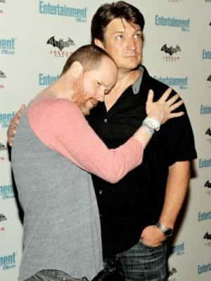
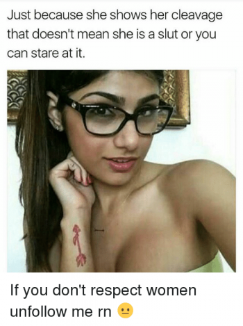
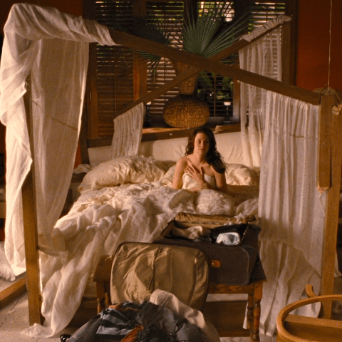
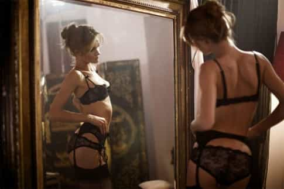

Jared is a middle-aged guy full of old-man wisdom. He's best described as a gentlemen scholar and a man among men. You can read his writing at his site: Legends of Men


Vampires were once great monsters of folklore. They were parasitic predators who fed on blood, the human life force. They were evil beings sent from the underworld to fulfill their carnal desires. Somewhere in the 20th-century vampires went from being demons to tragically cursed lovers.
It wasn’t men who recognized everything that makes certain types of women lust after vampires. It was women. Anne Rice, who wrote Interview with a Vampire, is one of the most popular. As is Stephanie Meyer, who wrote the Twilight series, and Joss Whedon who created Buffy the Vampire Slayer (although he isn’t a woman he’s pretty darn close). There are more.

What they recognized is that if you take away the vampiric drive to kill there remains a figure that excites women sexually. Not necessarily all women. But at least many women, perhaps a majority. What qualities do vampires have that excite women?
For immortal vampires, who drink human blood, people are objects. Men don’t typically enjoy being objectified. Women on some level, however, enjoy being objectified, often sexually. Maybe they present themselves as sexual objects publicly but do not want to be treated that way during interactions. Pornstars and strippers are examples of this. Or maybe women don’t want to be objectified publicly but enjoy it privately on their own terms, which is far more common.

For either type of woman, the vampire represents the being that will most genuinely treat them as objects of pleasure. Whether they are treated that way publicly or privately matters not. Vampires are the fantasy after all and the women who write them know how to best portray them in ways that turn women on.
Here’s a great article about men with dark triad traits that women love. Vampires aren’t human anymore, but by human standards, vampires are psychopathic and Machiavellian. They take what they want without regard to human life. Nothing stands in their way. It’s a very romantic notion for women that they should be the objects of desire so great that superhuman beings will kill just to have them. Just to taste their blood.
Of course, they love everything else about dark triad men. They love being tossed aside by men with better stuff to do. No woman wants to date down. Vampires will always treat a woman as beneath them, because to a vampire she is. Being treated so poorly only serves to make her want the vampire more.
Think she wants him?
Vampires are always displayed as being incredibly strong, and usually ripped. Almost universally, women are more attracted to muscular men than weak men. There’s no need to belabor the point except to note how much it aides in the next reason women want sex with vampires.

The last three reasons women want sex with vampires culminates in this one. As a general rule, women enjoy rough sex. Vampires guarantee that. Women are objects to vampires. The vampires have no care or compassion for them. Thus, there’s nothing holding them back from being as rough with women as they want to be. And their abnormal strength only ensures that they can more easily treat women as objects of gratification.
Add in some biting, the vampire’s trademark, and you’ve got something to tantalize the women who enjoy S&M. But that’s not necessary to the rough sex women enjoy. The climax (pun intended) of one of the Twilight movies involves the vampire having sex and impregnating the protagonist. He gives her the business with such force that he breaks the bed.

Whether it’s a conscious concern or just a subconscious one, women know the wall is coming. They might be young and hot now, but ten years from is a toss-up. They could go on the wrong birth control, gain 50 lbs, and never lose it. Maybe their skin gets sun-dried and wrinkled. Maybe they even develop a thousand cock stare (one hopes they don’t develop that so young). Women know these are possibilities and they don’t like it.
Vampires offer women eternal youth and eternal beauty. It’s rare in vampire stories for a woman to want to remain human with her vampire lover. For one thing, she would age but he wouldn’t. But more importantly, the female sexual fantasy focuses on being an object of such great desire that a powerful man will do anything to have her. In the case of a vampire, he will even give her eternal youth and beauty just so he can have her for all eternity.
The culminating event for women in their sexual fantasies with vampires is that they become the special girl, unlike all the other objectified women. The women in these fantasies become more than objects to the vampires. So incredible is the woman of this fantasy that the vampire falls in love with her, changing his dark triad ways. No longer is the woman just a warm body for him to ravage in bed, though he will surely continue to do that. Now the woman is the object of his romantic desire, whom he will woo for all eternity after he makes her a vampire too.
Stories of romance used to feature the Prince Charming archetype as the man women wanted. That was when women were sexually attracted to a man as the provider and protector. Prince Charming was the ultimate provider and protector.
Now that women provide for and protect themselves they’ve abandoned Prince Charming. Now women are attracted to men of higher stations than them. They want the men who don’t want them, especially damaged men. They don’t want the prince that gets on his knee to propose marriage. They want the prince that uses them all night long and kicks them out of the castle the next morning. Because the next step in that fantasy is that the prince realizes he’s never had a sexual object as good as her and he must have her again. Replace kicking her out of the castle with drinking her blood and vampires are exactly what women want.
For more from Jared Trueheart on the roles of men and women in literature and film check out his writing at Legends of Men.
Read More: Doctors In African Nation Of Malawi Are Being Killed By Mobs Who Think They’re Vampires